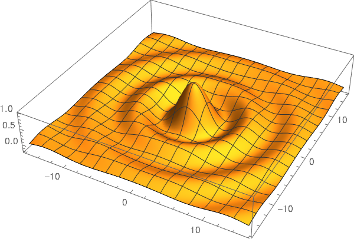

Usando el lenguaje de Wolfram en Jupyter: Alternativa gratuita a Mathematica
En esta publicación voy a describir cómo agregar Wolfram Language a Jupyter. Esto proporciona una alternativa gratuita a Mathematica con, prácticamente, la misma sintaxis. El uso de Wolfram Engine es gratuito en un ambiente que no sea de producción como se describe en su sitio web:
Wolfram Engine es gratuito para desarrolladores está disponible para desarrollo de software en aplicaciones que no son de producción.
Puede utilizar este producto para:
desarrollar un producto para usted o su empresa
realizar proyectos personales en casa, en la escuela, en el trabajo
explorar Wolfram Language para futuros proyectos de producción
Instalación
Para instalar debes seguir los siguientes pasos:
Crear una cuenta de Wolfram, si no tienes una.
Ejecutar el instalador.
-
Digitar lo siguiente en la terminal.
wolframscript
y te debería preguntar por tu correo y contraseña.
Luego deberías estar en una terminal y ver lo siguiente
Wolfram Engine activated. See https://www.wolfram.com/wolframscript/ for more information. Wolfram Language 12.2.0 Engine for Linux x86 (64-bit) Copyright 1988-2021 Wolfram Research, Inc.
Y podemos probar que está funcionando
In[1]:= $Version Out[1]= 12.2.0 for Linux x86 (64-bit) (January 7, 2021) In[2]:= Integrate[1/(1 + x^2), x] Out[2]= ArcTan[x]
Ahora debemos instalar WolframLanguageForJupyter. Para esto debemos digitar lo siguiente en una terminal
git clone https://github.com/WolframResearch/WolframLanguageForJupyter.git cd WolframLanguageForJupyter/ ./configure-jupyter.wls add
Para probar que está instalado podemos digitar lo siguiente
jupyter kernelspec list
y debería tener una salida similar a la siguiente
wolframlanguage12. /home/nicoguaro/.local/share/jupyter/kernels/wolframlanguage12.2
O también podemos intentar con
jupyter notebook
y ver lo siguiente en el menú de kernel.

Prueba
Probé algunas de las capacidades y puedes descargar el notebook o ver una versión estática aquí.
Calculemos la integral
sol:= Integrate[1/(1 + x^3), x] TeXForm[sol]
Y realicemos un gráfico 3D.
fun:= Sin[Sqrt[x^2 + y^2]]/Sqrt[x^2 + y^2] Plot3D[fun, {x, -5*Pi, 5*Pi}, {y, -5*Pi, 5*Pi}, PlotPoints -> 100, BoxRatios -> {1, 1, 0.2}, PlotRange -> All]
En este caso no tenemos gráficos interactivos. Esto no está implementado aún, pero si estás interesado puede ver el issue sobre esto en GitHub.
Comentarios
Comments powered by Disqus